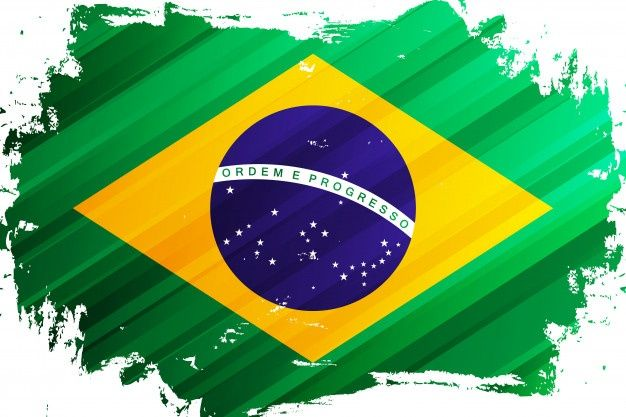

Ouviram do Ipiranga as margens plácidas
De um povo heróico o brado retumbante,
E o sol da liberdade, em raios fúlgidos,
Brilhou no céu da pátria nesse instante.
Se o penhor dessa igualdade
Conseguimos conquistar com braço forte,
Em teu seio, ó liberdade,
Desafia o nosso peito a própria morte!
Ó Pátria amada,
Idolatrada,
Salve! Salve!
Brasil, um sonho intenso, um raio vívido
De amor e de esperança à terra desce,
Se em teu formoso céu, risonho e límpido,
A imagem do Cruzeiro resplandece.
Gigante pela própria natureza,
És belo, és forte, impávido colosso,
E o teu futuro espelha essa grandeza.
Terra adorada,
Entre outras mil,
És tu, Brasil,
Ó Pátria amada!
Dos filhos deste solo és mãe gentil,
Pátria amada,
Brasil!
Deitado eternamente em berço esplêndido,
Ao som do mar e à luz do céu profundo,
Fulguras, ó Brasil, florão da América,
Iluminado ao sol do Novo Mundo!
Do que a terra, mais garrida,
Teus risonhos, lindos campos têm mais flores;
"Nossos bosques têm mais vida",
"Nossa vida" no teu seio "mais amores."
Ó Pátria amada,
Idolatrada,
Salve! Salve!
Brasil, de amor eterno seja símbolo
O lábaro que ostentas estrelado,
E diga o verde-louro dessa flâmula
- "Paz no futuro e glória no passado."
Mas, se ergues da justiça a clava forte,
Verás que um filho teu não foge à luta,
Nem teme, quem te adora, a própria morte.
Terra adorada,
Entre outras mil,
És tu, Brasil,
Ó Pátria amada!
Dos filhos deste solo és mãe gentil,
Pátria amada,
Brasil!
